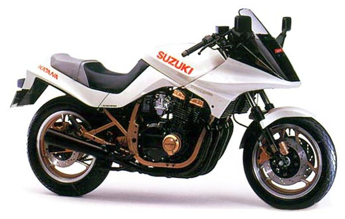
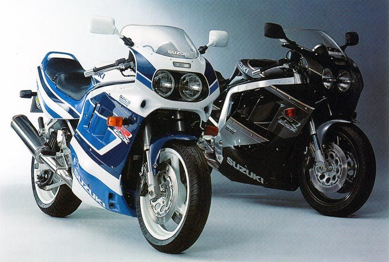
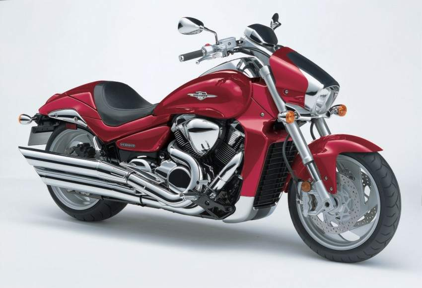

Most iconic Suzuki motorcycles
Suzuki GSX-S1100S Katana Not the re-boot, but the original built back in the early 80s. Prior to this bike, motorcycle design was pretty stoic, and the general look of a machine had remained relatively unchanged since the 1940s. And then the Suzuki Katana arrived and there was a collective thud as the motorcycle industry's jaw hit the floor. Styling the bike fell to Hans Muth, ex-BMW head of design, and the company Target Design and the bike's futuristic features didn't stop with the styling. It had a rudimentary form of anti-dive on the front forks, pre-load adjustment on the rear shocks and 110bhp which made it not only look like a spaceship - it went like one too.
GSX1300R Hayabusa Built at a time when the big factories were in an outright fight for world domination, the Hayabusa's battleground was the top-speed war that raged in the mid to late 90s. With over 170bhp and capable of speeds in excess of 180mph, the 'Busa became the king of the autobahn and a favourite with those looking for cheap speed on the road and drag-strip.

Suzuki GSX-R1100 In a bid to take the fight to Honda's all-conquering FireBlade, Suzuki tried to use a sledgehammer to crack Honda's proverbial acorn. In an attempt to bolt on more power, the big Gixxer gained water cooling as opposed to oil/air-cooling and the bike ballooned to over 250kg in ready to ride form. You could be forgiven for thinking that all this negativity would make the 1100 WP a sales flop, but while sales weren't stellar, the bike's bad-to-the-bone attitude made it a favourite with those who had a penchant for wheelies and making off from the local constabulary at high speed.
Suzuki Boulevard 1800 is a cruiser style bike and is powered by a huge liquid cooled 1,783 cc V-Twin engine, producing 123 bhp at 6,200 rpm and maximum torque at just 3,200 rpm.The engine benefits from GSX-R tech and is controlled by Suzuki's electronic fuel injection system; you control the first set of two valves while the ECU controls the second based on temperature / pressure data from the air sensor. For maximum flexibility between looking good solo and touring two up Suzuki provide both the pillion seat and seat cowl.
